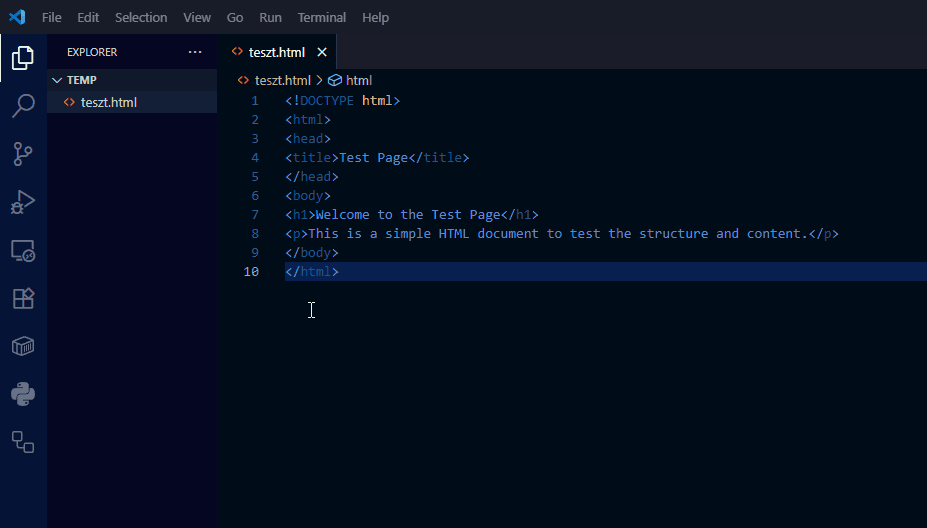

Verziókezelés alapok és Git bevezető (GUI fókusszal)
Ez az útmutató segít megérteni a verziókezelés fontosságát és elsajátítani a Git alapjait a Visual Studio Code (VS Code) grafikus felületének és a GitHub segítségével.
A verziókezelés alapjai
Mi az a verziókezelés és miért hasznos?
Képzeld el, hogy egy fontos egyetemi beadandón dolgozol. Elmented a fájlt beadando_v1.txt néven. Később módosítasz rajta, és elmented beadando_v2.txt néven, majd jön a beadando_vegleges.txt, és végül a beadando_TENYLEG_vegleges_javitott.txt. Ismerős, ugye?
Note
Szándékosan írtam *.txt fájlformátumot, pedig a beadandókat jellemzően nem szöveges fájlokban készítjük el. A verziókezelők jellemzően szöveges fájlok kezelését támogatják. A *.docx formátum a valóságban egy zip-alapú konténer, ezért általában a verziókezelők bináris fájlként tekintik. A verziókezelők a bináris állományokat korlátozottan támogatják. Gondoljunk bele, miért éppen szöveges állományokra vannak a verziókezelők "kihegyezve"?
Ez a módszer kaotikus, nehezen követhető, és ha többen dolgoztok egy projekten, kész rémálommá válhat.
A verziókezelő rendszer (Version Control System - VCS) egy szoftver, ami pontosan ezt a problémát oldja meg. Lehetővé teszi, hogy:
Mentsd a projekt állapotait: Ahelyett, hogy fájlokat másolgatnál, a rendszer "pillanatképeket" (commitokat) készít a projektedről minden egyes mentésnél.
Visszatérj egy korábbi állapothoz: Ha elrontottál valamit, egyetlen kattintással visszaállhatsz egy korábbi, működő verzióra.
Párhuzamosan dolgozz: Különböző funkciókon vagy részeken dolgozhatsz anélkül, hogy zavarnátok egymás munkáját (ezt nevezik "branching"-nek, azaz elágaztatásnak).
Nyomon kövesd a változásokat: Pontosan láthatod, hogy ki, mikor és mit módosított a kódban. Ez rendkívül hasznos a hibakeresésnél és a közös munkánál.
Milyen megközelítések vannak?
Alapvetően két fő architektúrát különböztetünk meg, melyek működését az alábbi összehasonlítás részletezi.
| Jellemző | Központosított Verziókezelő (CVCS) | Elosztott Verziókezelő (DVCS) |
|---|---|---|
| Alapkoncepció | Egyetlen központi szerver tárolja a teljes kódbázist és annak előzményeit. | Minden fejlesztő gépén megtalálható a repository teljes másolata, a teljes előzményekkel. |
| Szerverfüggőség | Magas. Ha a központi szerver nem elérhető, a legtöbb művelet (commit, branch, stb.) leáll. | Alacsony. A legtöbb művelet (commit, branch-ek kezelése, előzmények megtekintése) offline is elvégezhető. |
| Hibatűrés | Alacsony. A központi szerver meghibásodása adatvesztéshez vezethet, ha nincsenek megfelelő mentések. | Magas. Ha a központi szerver kiesik, bármelyik fejlesztő másolatáról helyreállítható a teljes repository. |
| Példák | Subversion (SVN), CVS, Perforce | Git, Mercurial, Bazaar |
A félév során a Git verziókezelővel fogunk dolgozni.
Git és Visual Studio Code
Hogyan kezdjünk neki?
A Git és a VS Code párosa rendkívül hatékony. A VS Code beépített Git-támogatással rendelkezik, ami vizuálisan is megkönnyíti a verziókezelést.
1. lépés: Telepítés
- Git: Töltsd le és telepítsd a hivatalos oldalról. A telepítés során a legtöbb alapbeállítás megfelelő lesz.
2. lépés: Konfiguráció (Ez az egyetlen terminálos lépés)
Mielőtt teljesen a grafikus felületre váltanánk, egyetlen alkalommal be kell mutatkoznunk a Gitnek. Ezt a legegyszerűbben a VS Code beépített termináljában tehetjük meg (Terminal > New Terminal). Add meg a neved és az e--mail címed. Ezek az adatok fognak megjelenni a mentéseid (commitjaid) mellett.
git config --global user.name "A Te Neved"
git config --global user.email "a-te-email@címed.com"
Erre a lépésre a jövőben nem lesz szükség, innentől minden kattintásokkal működik.
3. lépés: Az első lokális repository (projektmappa) létrehozása
Hozz létre egy új mappát a projektednek (pl.
elso-git-projekt).Nyisd meg ezt a mappát a VS Code-ban (
File > Open Folder...).Kattints a bal oldali sávon a Source Control (Forráskezelés) ikonra (úgy néz ki, mint egy elágazás).
Mivel a mappa még nem verziókezelt, a VS Code felajánl egy nagy kék gombot: Initialize Repository. Kattints rá!
Ezzel a kattintással a VS Code a háttérben futtatta a
git initparancsot, és létrehozta a rejtett.gitmappát, ami a verziókezeléshez szükséges összes információt tárolja.
4. lépés: Az első fájl verziókezelése
Hozz létre egy új fájlt a VS Code-ban, pl.
teszt.html.Írj bele valamilyen tartalmat, például egy egyszerű HTML vázat.
Mentsd el a fájlt.
A Source Control panelen látni fogod, hogy az teszt.html a "Changes" (Változások) listában van. A Git észlelte, hogy van egy új, még nem követett fájlod.
A Git alapvető munkafolyamata (Staging és Commit):
A Gitben két lépésben mentjük el a változásokat:
Staging (előkészítés): Kiválasztod azokat a módosított fájlokat, amiket egy "csomagban" szeretnél elmenteni.
Commit (véglegesítés): Az előkészített fájlokat egy üzenettel ellátva véglegesen elmented a projekt történetébe.
Hogyan csináld ezt VS Code-ban?
A Source Control panelen, a
Changeslista mellett vidd az egeret azteszt.htmlfájl fölé, és kattints a+(Stage Changes) ikonra. Ezzel a fájl átkerül a "Staged Changes" (Előkészített változások) szakaszba.Az ablak tetején, a "Message" (Üzenet) mezőbe írj egy rövid, de informatív üzenetet, ami leírja a változtatást. Pl.:
Projekt inicializálása, teszt.html létrehozása.Kattints a
Commitgombra (vagy a pipa ikonra).
Gratulálok, elkészítetted az első commitodat! A projekt jelenlegi állapota biztonságban el van mentve.
A folyamat főbb lépéseit a lenti animáción követheted.

GitHub
A GitHub egy webalapú szolgáltatás, ami Git repository-k tárolására szolgál. Olyan, mint egy "felhő" a Git projektjeidnek. Lehetővé teszi, hogy:
Biztonsági másolatot készíts a kódodról.
Bárhonnan elérd a projektjeidet.
Másokkal is megoszd a kódodat és együtt dolgozzatok rajta.
Kód feltöltése GitHubra VS Code segítségével
1. Lépés: GitHub fiók létrehozása
- Ha még nincs, regisztrálj egy fiókot a github.com oldalon.
2. Lépés: A projekt publikálása GitHubra A VS Code ezt a folyamatot hihetetlenül leegyszerűsíti. Nem kell a GitHub weboldalán létrehoznod a tárolót, a VS Code mindent elintéz helyetted.
A Source Control panelen látni fogsz egy Publish to GitHub gombot. Kattints rá!
A VS Code fel fogja ajánlani, hogy jelentkezz be a GitHub fiókodba. Engedélyezd a hozzáférést a böngészőben.
A bejelentkezés után a VS Code megkérdezi, hogy milyen néven szeretnéd létrehozni a tárolót a GitHubon (alapértelmezetten a mappa nevét ajánlja fel), és hogy az privát vagy nyilvános legyen.
Private: Csak te és az általad meghívott személyek láthatják.
Public: Bárki láthatja az interneten.
Válaszd ki a neked megfelelőt, és hagyd, hogy a VS Code feltöltse a fájlokat.
Ha minden sikeres, a VS Code a háttérben létrehozta a repository-t a GitHubon, összekapcsolta a lokális projekteddel, és fel is töltötte az első commitodat. Ha most megnyitod a GitHub profilodat a böngészőben, látni fogod az új repository-t a feltöltött index.html fájllal!
A jövőbeli munkafolyamat:
Innentől kezdve a munkafolyamat a következő:
Dolgozol a fájlokon lokálisan, majd elmented őket.
A Source Control panelen a
+ikonnalStage-eled a változtatásokat.Írsz egy commit üzenetet, és a
Commitgombbal elmented a változást a lokális történetbe.Amikor a változtatásokat a GitHubra is fel szeretnéd tölteni, kattints a bal alsó sarokban található Sync Changes gombra. Ez letölti a távoli változásokat (ha vannak) és feltölti a tieidet.
Ezzel a tudással már képes vagy önállóan vagy csapatban is hatékonyan kezelni a projektjeidet, szinte teljes egészében a VS Code kényelmes, grafikus felületén. Sok sikert!